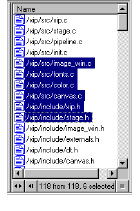

Results Window
The Results window displays entities matching a selected entity category, query results, and group members, depending upon your chosen activity.

The Results window displays vertical and horizontal scroll bars to allow you to view the window’s entire contents, but you can also resize this window if desired by clicking the dual arrow icon ( ) at the bottom corner of the window.
Across the bottom of the Results window, navigation icons appear that allow you to change the display of the Results window. Use the back icon ( ) to display previous query results, and the forward icon ( ) to display later results.
The Results window also displays a Filter List bar that illustrates the matching result quantity in relation to the total number of entities, along with a count of those selected. For example, if you perform a query asking which classes a selected function uses, the Filter List bar displays the count of matching classes in relation to the total number of classes in the model. If you make a selection from your Results window, the Filter List bar displays the total number of selected classes in addition to the other numbers.